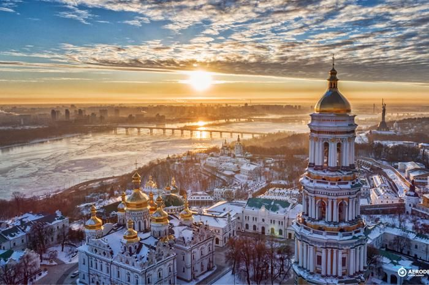
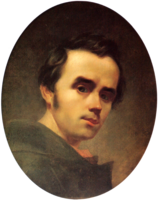
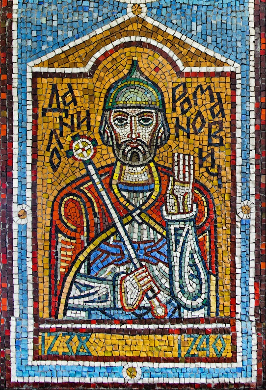
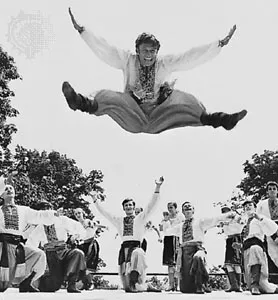
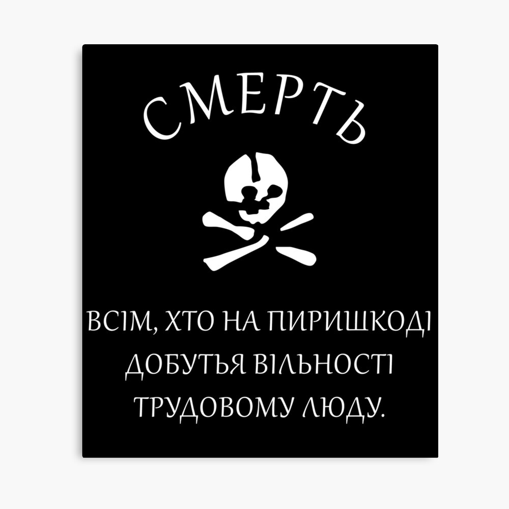
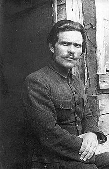

1 - Colors of the national flag of Ukraine?
Blue and Yellow |
Blue and Green |
Blue and Orange |
Orange and Yellow |

2 - When did Ukraine gain independence as recognized today?
November 22, 2004 |
December 5, 1994 |
August 24, 1991 |
December 25, 1991 |
3 - What mountain range is Ukraine best know for?
Alps |
Carpathian |
Ural |
Caucasus |

4 - What is the historic coat of arms of Ukraine?
Vyla (pitchfork) |
Mech (sword) |
Tryzub (trident) |
Klyuch (key) |

5 - What is the official capital of Ukraine?


6 - Who were the Ukrainian warriors that fought for freedom?
Cossacks |
Khazars |
Hussars |
Magyars |

7 - What written form does the Ukrainian language use?
Greek |
Latin |
Cyrillic |
Armenian |
8 - What is the largest river that runs through Ukraine?


9 - Who is the well known Ukrainian writer who wrote "Kobzar"?
Taras Shevchenko |
Alexander Pushkin |
Nikolai Hohol |
Lesya Ukrainka |


10 - Which of these are Ukrainian food of Ukrainian Cuisine?
Zrazy, Leczo, Pyzy |
Borshch, Varenyky, Holubtsi |
Liptauer, Hurka, Langos |
Churchkhela, Khinkali, Lobio |

11 - Which is the name of the traditional Ukrainian clothing?
Arlecchino |
Czamara |
Andarak |
Vyshyvanka |

12 - Who wrote the Ukrainian constitution in 1710?
Leonid Kravchuk |
Mykhailo Hrushevsky |
Pylyp Orlyk |
Bohdan Khmelnytsky |

13 - What nations are the ancestors of Ukraine?
Golden Horde; Muscovy |
Ottoman; Byzantine |
Transylvania; Wallachia |
Halychyna; Hetmanate |
14 - Who is the Cossack leader that got a city named after him?
Khmelnytsky |
Augustus |
Volodymyr the Great |
Romanovych |

15 - What is the name of the famous Ukrainian Cossack dance?
Hopak |
Oberek |
Khorumi |
Ländler |
16 - What are new Ukrainian Hetmans/presidents given?
A sword |
Bulava |
A rifle |
Tryzub |
17 - Who was the first Ukrainian president of the Rada in 1918?
Hrushevsky |
Shevchenko |
Piłsudski |
Kravchuk |
18 - When was the name "Ukraine" first mentioned?
1991 CE |
1340 CE |
1187 CE |
1648 CE |

19 - What does the Ukrainian red and black flag represent?
War and death |
Red sunset and the rich soil |
Borshch and pepper |
Ukrainian blood darkening the soil |


20 - Who were the Ukrainian anarchists in 1900's?
White army, Nikolayevich |
Red Army, Leon Trotsky |
Black army, Makhno |
Hetmanate, Skoropadsky |
21 - Ukrainian army fighting Nazis/Communists in WW2?
Army of the Ukrainian state |
UPA (Rebels) |
UNR (Republic army) |
Makhnovists |
22 - What is the reply to "Slava Ukrayini" (Glory to Ukraine)?
Glory to the heroes |
Glory to the nation |
Glory to freedom |
Glory to all |

23 - How many documented folk songs does Ukraine have?
100,000; one of the largest numbers |
10,000; average number |
200,000+; more than any other nation |
30,000; large number |


24 - Which one of these is a Ukrainian haircut?
Czupryna |
Oseledets |
Ochipok |
Vinok |

25 - Which of these characterize Ukrainians as people?
Love of Freedom |
Love of Balance |
Love of Easy Peace |
Love of War |

 Ukraine's Contribution
Ukraine's Contribution Roksolana Virlan
Roksolana Virlan Language of Ukraine
Language of Ukraine Ukrainian Folk Songs
Ukrainian Folk Songs All Sources
All Sources